用意するもの
- Android スマホ
- Claude アプリ（有料プランでログイン済み）
- GitHub アカウント（無料。ステップ 1 で作れます）
GitHub でサイトの置き場所を作る最初の1回だけ
- スマホのブラウザで github.com/signup を開き、アカウントを作る
- github.com/new を開く。名前は英数字で短く（例:
my-site）。Public のまま - 「Add README」を On にして「Create repository」
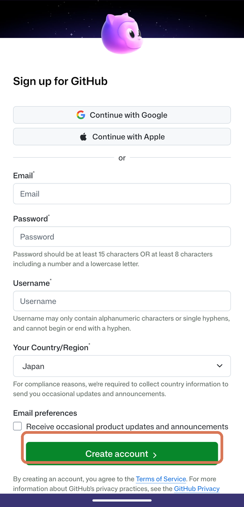
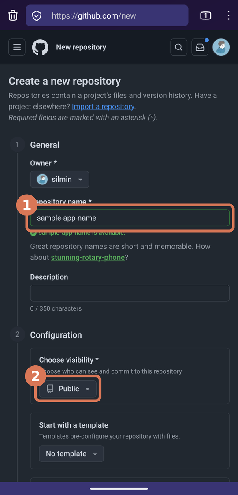
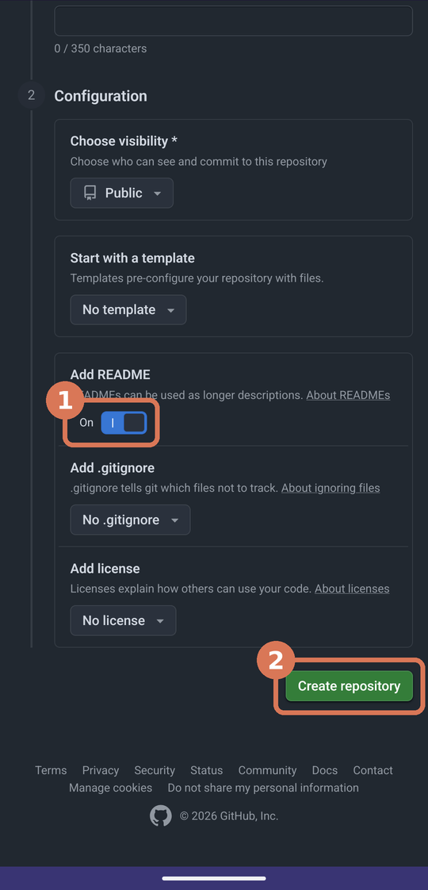
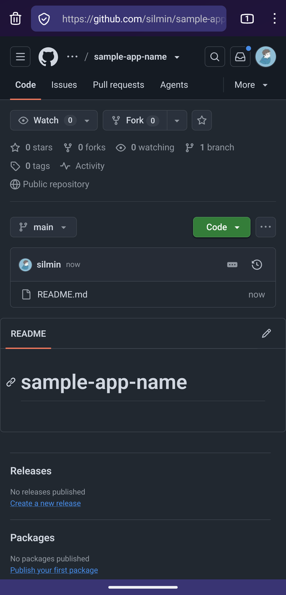
この「リポジトリ」が、サイトのファイルの置き場所です。1サイトにつき1つ作ります。
公開のスイッチを入れる最初の1回だけ
- リポジトリの画面で「More」→「Settings」
- 下のほうにある「Pages」
- Branch の「None」を押して「main」を選ぶ
- 「Save」
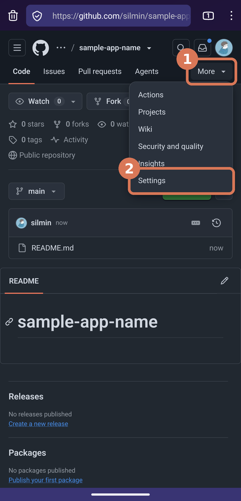
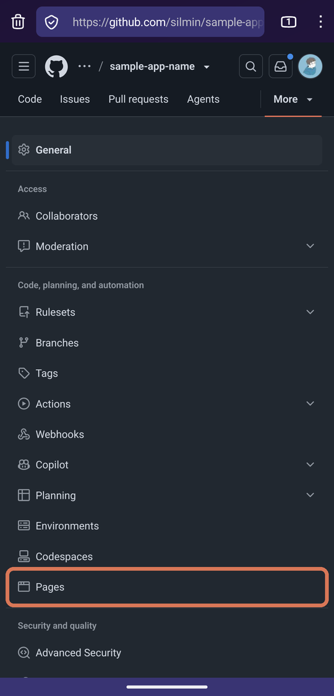
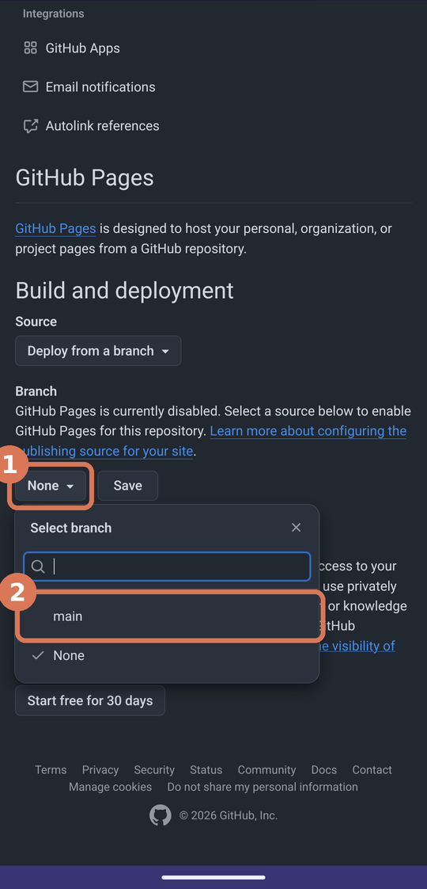
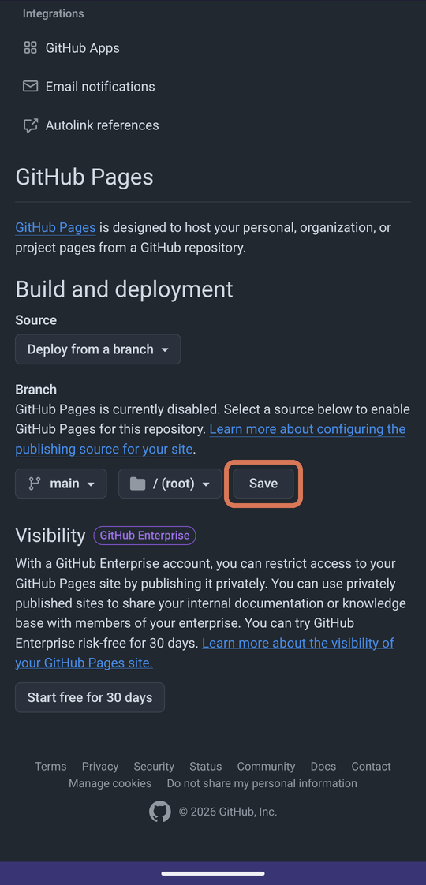
あなたのサイトの URL はこの形になります。
URLhttps://ユーザー名.github.io/リポジトリ名/
Claude アプリと GitHub をつなぐ最初の1回だけ
- Claude アプリの左上メニューから「Code」
- 「New session」
- GitHub につなぐよう言われたら、そのまま進んで許可する
- 「Approve, Install, & Authorize Claude」の画面が出たら、「All repositories」のまま緑のボタンを押す
この画面はここで出ないこともあります。その場合は、あとで「反映して」と言ったときに Claude が「アクセス権がない」と言ってリンクを出してくるので、そのリンクを開いて同じ画面で許可すれば OK です。許可したら、もう一度「反映して」。
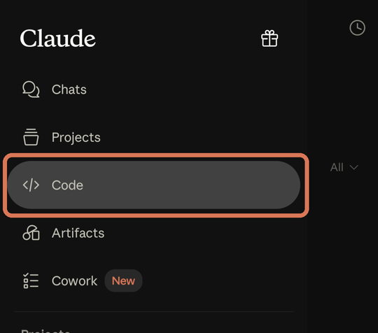
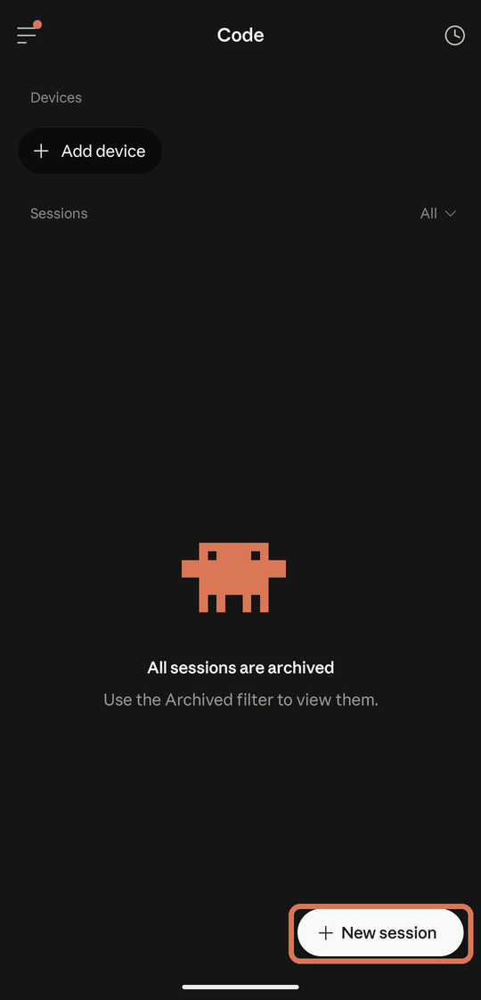
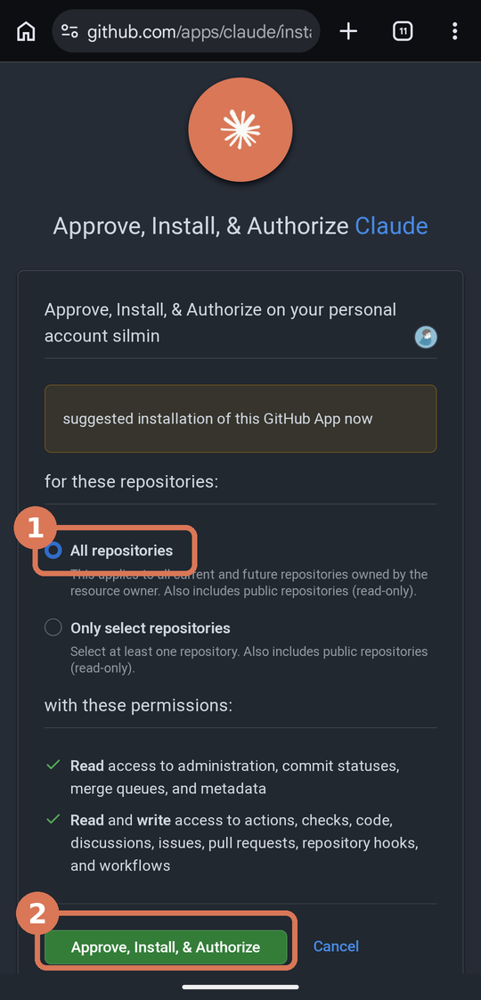
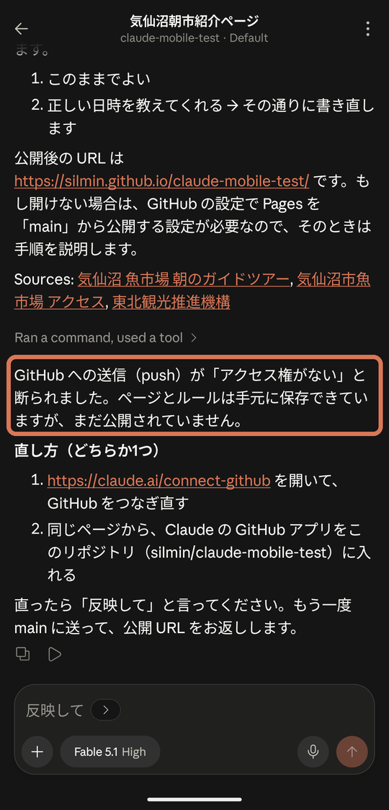
「Code」が見当たらないときは、Claude のプランが有料になっているか確かめてください。
最初の指示を送る最初の1回だけ
- 入力欄の上の「Add repository」を押す
- 一覧からステップ 1 で作ったリポジトリを選ぶ
- 下の文をそのままコピーして貼り付けて送る
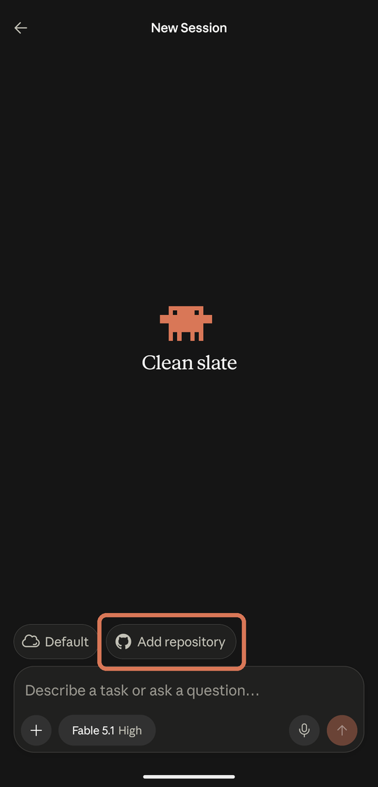
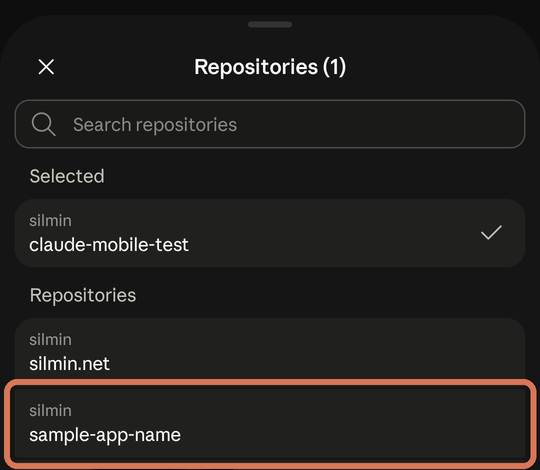
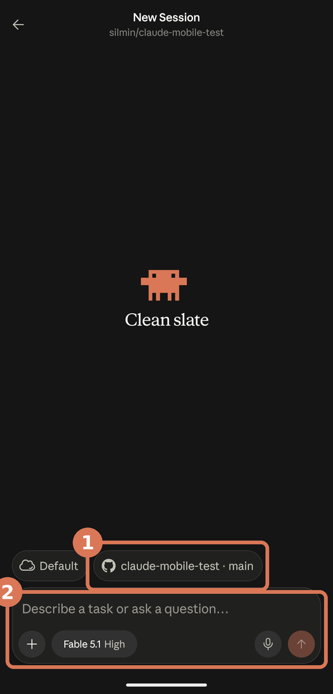
最初に貼る文このリポジトリで GitHub Pages のサイトを作ります。次のルールを CLAUDE.md に保存して、以後ずっと守ってください。
- 入口は index.html 1ファイル。CSS と JavaScript もその中に書く。
- 画像などへのパスは相対パス（./img/a.png の形）にする。
- ブランチは main だけ。新しいブランチや PR は作らない。
- 私が「反映して」と言ったら、変更を commit して main に push する。commit メッセージは日本語で一行。
- push したら公開 URL を一行で返す。
- 私はプログラミング初心者。専門用語を使わず短く説明する。変更点は「画面のどこがどう変わるか」で言う。迷ったら選択肢を2つに絞って聞く。
保存できたら、まず「Hello World」「これはサンプルページです」とだけ表示されるシンプルな index.html を作ってください。
Claude が作業している間は待つだけです。アプリを閉じても作業は続きます。
「反映して」と言う
できあがったら、こう送ります。
これだけ反映して
Claude がサイトを更新して、URL を返します。1〜2 分待ってから URL を開いてください。
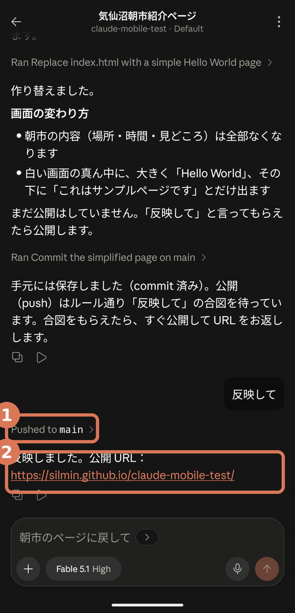
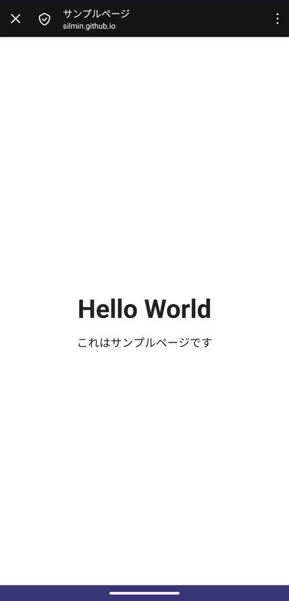
はじめての「反映して」のあとは、公開されるまで数分かかることがあります。
直したいところを伝える
サンプルページが見えたら、ここからが本番です。同じ画面で続けて、作りたいものを書くだけ。できたらまた「反映して」。この繰り返しがサイト作りです。
例えば気仙沼の朝市を紹介するページにして。場所、時間、見どころを載せて、スマホで見やすく。 反映して
さらに文字をもう少し大きくして。見出しの色を海っぽい青にして。 反映して
- 何が変わったかは、Claude が画面の言葉で説明してくれます
- うまく伝わらないときは、サイトのスクショを貼って「ここ」と言うと早いです
- 前の画面は Code の一覧に残っています。見つからなければ New session で同じリポジトリを選べば続きができます。ルールは CLAUDE.md に残っています
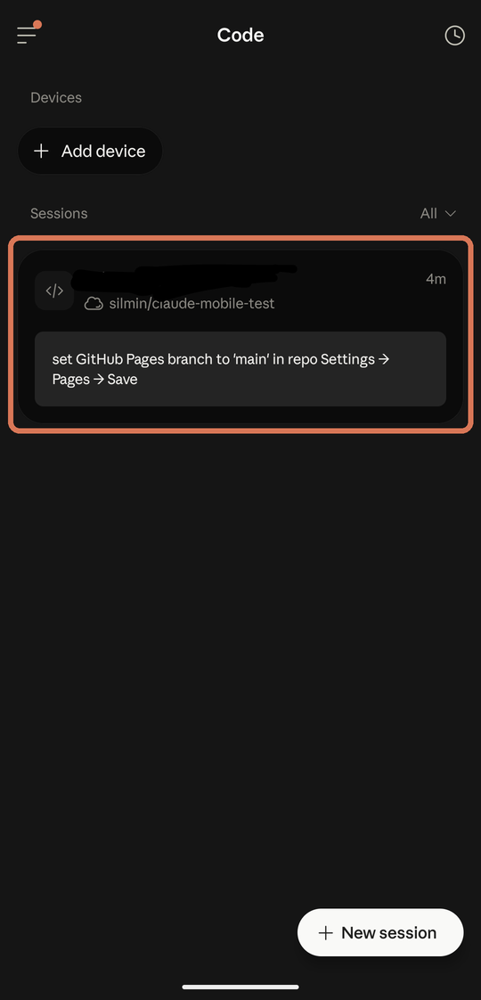
困ったとき
- 「アクセス権がない」と言われて反映できない
- Claude が出してくるリンクを開いて、「Approve, Install, & Authorize」を押す（ステップ 3 の画面）。リンクが出てこなければ claude.ai/customize/connectors で自分の名前の横の「Fix」。そのあと、もう一度「反映して」。
- 「反映して」と言ったのにサイトが変わらない
- 1〜2 分待って、ブラウザを再読み込み。それでもダメなら Claude に「main に push できた？」と聞く。
- URL を開くと 404 と出る
- ステップ 2 の Pages 設定が「main」になっているか確認。
- Code タブにリポジトリが出てこない
- リポジトリが Public になっているか確認。ステップ 3 の GitHub 連携をやり直す。
- Claude が英語で返してくる
- 「日本語で」と一言送る。